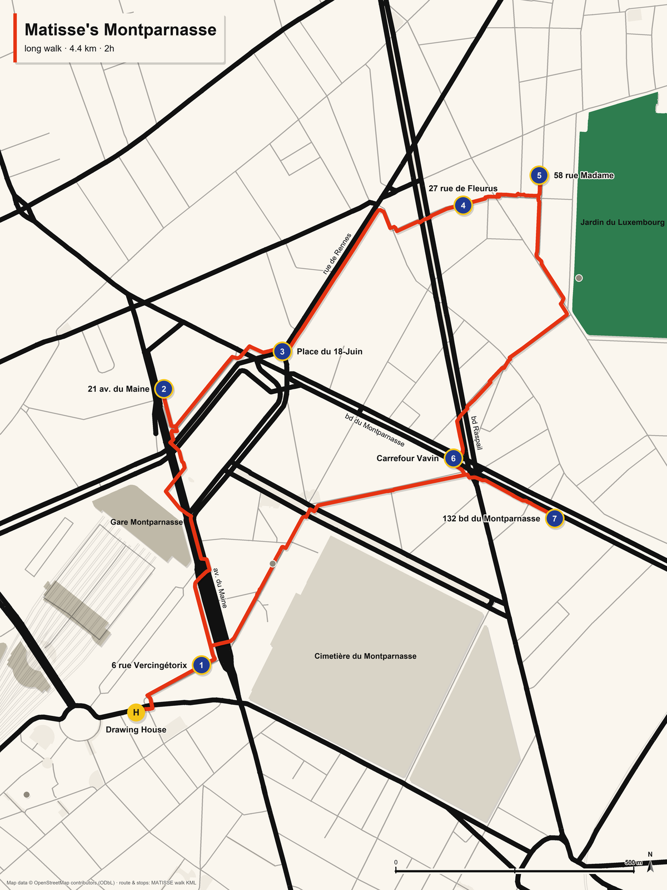
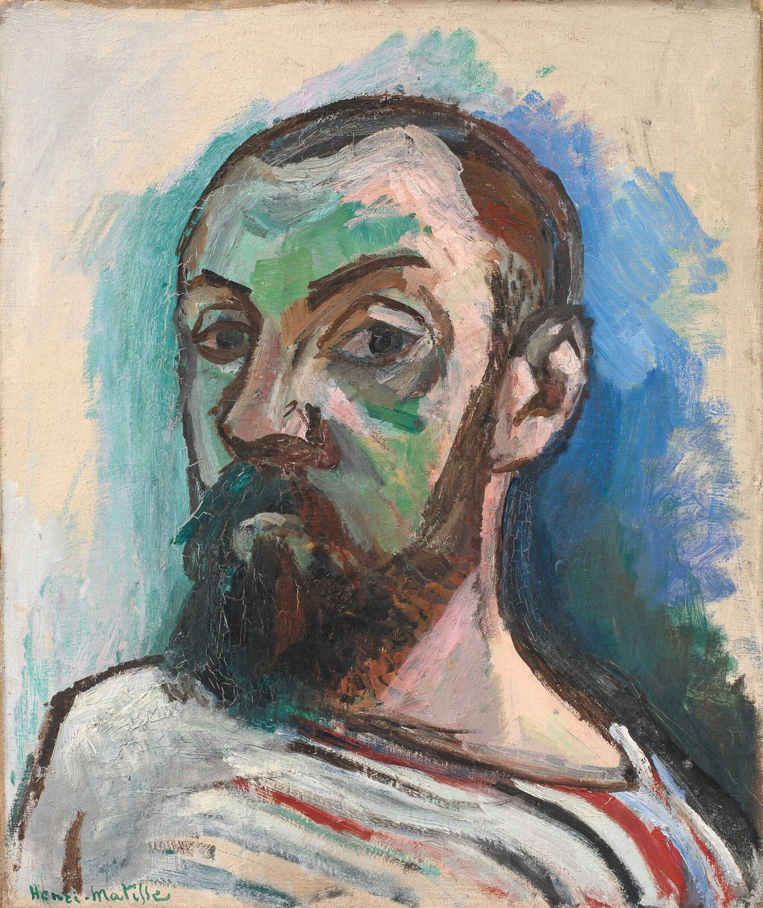

<!doctype html>
<html lang="en">
<head>
<meta charset="utf-8">
<meta name="viewport" content="width=device-width, initial-scale=1">
<title>Matisse's Montparnasse · booklet</title>
<link rel="stylesheet" href="https://fonts.googleapis.com/css2?family=Fraunces:opsz,wght@9..144,900&family=Karla:wght@400;700&family=Patrick+Hand&display=swap">
<script src="content.js"></script>
<style>
  /* A5 landscape booklet, built from the site's content. Cream paper, Jazz palette, square corners. */
  @page { size: A5 landscape; margin: 0; }
  :root { --paper: #FAF6EE; --paper-2: #EFE8D6; --ink: #141414; --soft: #4A463F; --cobalt: #1F3A93; --vermilion: #E63312; --lemon: #F5C518; --leaf: #2E7D4F;
          --display: "Fraunces", Georgia, serif; --body: "Karla", Arial, sans-serif; --hand: "Patrick Hand", cursive; }
  * { box-sizing: border-box; }
  html, body { margin: 0; background: var(--paper); color: var(--ink); font-family: var(--body); font-size: 10.5pt; line-height: 1.38; }
  .page { width: 210mm; height: 148mm; overflow: hidden; page-break-after: always; position: relative; padding: 9mm 10mm 8mm; background: var(--paper); }
  .page.band { padding-top: 0; }
  h1, h2, h3 { font-family: var(--display); font-weight: 900; line-height: 1; margin: 0; }
  p { margin: 0; }
  img { display: block; max-width: 100%; }
  .eyebrow { text-transform: uppercase; letter-spacing: .12em; font-size: 7.5pt; font-weight: 700; color: var(--soft); }
  .credit { font-size: 7pt; color: var(--soft); line-height: 1.3; }
  .folio { position: absolute; bottom: 5mm; right: 10mm; font-size: 7.5pt; color: var(--soft); }
  .folio.l { right: auto; left: 10mm; }

  /* cover */
  .cover { display: grid; grid-template-columns: 1fr 1fr; align-items: center; gap: 8mm; }
  .cover h1 { font-size: 34pt; }
  .cover .lede { font-size: 11.5pt; max-width: 36ch; margin-top: 4mm; }
  .cutout { width: 80mm; }

  /* chapter opener: colour band + anchor picture */
  .chapter { display: grid; grid-template-rows: auto 1fr; gap: 4mm; }
  .cband { background: var(--accent, var(--cobalt)); color: var(--accent-ink, #FAF6EE); margin: 0 -10mm; padding: 6mm 10mm 5mm; display: grid; grid-template-columns: auto 1fr; gap: 6mm; align-items: center; }
  .cband .num { font-family: var(--display); font-weight: 900; font-size: 30pt; line-height: .9; }
  .cband h2 { font-size: 20pt; }
  .cband .meta { font-size: 9pt; opacity: .92; margin-top: 1mm; }
  .anchor { display: grid; grid-template-columns: 1fr; justify-items: center; align-content: start; gap: 2mm; min-height: 0; }
  .anchor img { max-height: 92mm; max-width: 100%; border: 1.5pt solid var(--ink); background: #fff; padding: 1.5mm; }
  .anchor .credit { text-align: center; max-width: 150mm; }
  .stand { font-weight: 700; font-size: 9.5pt; text-align: center; max-width: 150mm; }

  /* the strip page: page image left, captions right */
  .strip { display: grid; grid-template-columns: 86mm 1fr; gap: 7mm; height: 100%; }
  .strip img { height: 128mm; width: auto; border: 1.5pt solid var(--ink); }
  .caps { display: grid; grid-template-rows: repeat(6, auto); gap: 2.5mm; align-content: start; font-family: var(--hand); font-size: 11.5pt; line-height: 1.22; }
  .caps div b { font-family: var(--display); font-weight: 900; margin-right: 1.5mm; color: var(--accent, var(--cobalt)); }
  .caps .h { font-family: var(--body); font-size: 7.5pt; color: var(--soft); text-transform: uppercase; letter-spacing: .1em; font-weight: 700; margin-bottom: 1mm; }

  /* story page */
  .story { display: grid; grid-template-columns: 1fr 58mm; gap: 7mm; height: 100%; }
  .story .text { font-size: 10.5pt; display: grid; gap: 3mm; align-content: start; }
  .story .text .lead { font-size: 11.5pt; }
  .fact { border-left: 2.5mm solid var(--vermilion); background: var(--paper-2); padding: 3mm 3.5mm; display: grid; gap: 1mm; }
  .fact .eyebrow { color: var(--vermilion); }
  .quiz { border: 1.5pt solid var(--ink); background: var(--lemon); color: #141414; padding: 3mm 3.5mm; display: grid; gap: 2mm; }
  .quiz .a { transform: rotate(180deg); font-size: 8.5pt; color: #4A463F; }
  .side { display: grid; gap: 4mm; align-content: start; }
  .side img.more { border: 1.5pt solid var(--ink); background: #fff; padding: 1mm; max-height: 50mm; width: auto; max-width: 100%; }
  .qr { display: grid; grid-template-columns: 22mm 1fr; gap: 3mm; align-items: center; border-top: 1pt solid var(--soft); padding-top: 3mm; }
  .qr img { width: 22mm; }
  .qr p { font-size: 8.5pt; }

  /* Matisse's Paris */
  .places { display: grid; grid-template-columns: repeat(3, 1fr); gap: 4mm 5mm; height: 100%; align-content: start; }
  .place { display: grid; grid-template-rows: auto auto 1fr; gap: 1.2mm; font-size: 7.6pt; line-height: 1.3; }
  .place img { height: 26mm; width: 100%; object-fit: cover; border: 1pt solid var(--ink); }
  .place h3 { font-size: 9.5pt; }
  .place .sub { font-size: 7pt; color: var(--soft); }
  .place.noimg .ph { height: 26mm; border: 1pt solid var(--ink); background: var(--paper-2); display: grid; place-items: center; font-family: var(--display); color: var(--soft); }
  .cups, .stars { font-size: 8pt; color: var(--soft); }

  /* lists */
  .two { display: grid; grid-template-columns: 1fr 1fr; gap: 6mm; height: 100%; align-content: start; }
  .qa { display: grid; gap: 2.5mm; }
  .qa div { border-bottom: 1pt solid var(--paper-2); padding-bottom: 2mm; }
  .qa .q { font-weight: 700; }
  .qa .ans { color: var(--soft); }
  .credits { columns: 3; column-gap: 5mm; font-size: 6.4pt; line-height: 1.25; }
  .credits div { break-inside: avoid; margin-bottom: 1.5mm; }
  .map img { width: 100%; height: 118mm; object-fit: contain; border: 1.5pt solid var(--ink); }
  .toc { display: grid; gap: 2mm; font-size: 10pt; }
  .toc div { display: grid; grid-template-columns: 10mm 1fr auto; gap: 3mm; }
  .toc b { font-family: var(--display); font-weight: 900; color: var(--cobalt); }
</style>
</head>
<body>
<div id="book"></div>
<script>
(function () {
  const W = window.WALK; const book = document.getElementById('book'); let folio = 0;
  const esc = s => String(s).replace(/&/g, '&amp;').replace(/</g, '&lt;');
  function page(html, cls, style) { folio++; const d = document.createElement('section'); d.className = 'page ' + (cls || ''); if (style) d.setAttribute('style', style); d.innerHTML = html + `<div class="folio${folio % 2 ? '' : ' l'}">${folio}</div>`; book.appendChild(d); }

  // 1 cover
  page(`<div class="cover">
    <div><svg class="cutout" viewBox="0 0 200 120"><path fill="#F5C518" d="M18 70c20-40 60-55 95-40-25 10-35 30-25 55-30 5-60-5-70-15z"/><path fill="#E63312" d="M120 20c30-10 60 10 62 40-20-10-40-5-50 15-10-20-15-40-12-55z"/><path fill="#2E7D4F" d="M60 95c15-8 35-6 50 6-15 6-35 8-50-6z"/><path fill="#141414" d="M150 62c-6-6-14-9-22-7 7 3 11 8 12 15-9-2-17 1-22 7 9 1 17 5 22 12 2-7 7-13 14-16-6-1-10-5-13-11 4 0 7 0 9 0z"/></svg></div>
    <div><p class="eyebrow">${esc(W.date)} · Paris</p><h1>Matisse's<br>Montparnasse</h1><p class="lede">A walk through the Paris of Henri Matisse and his friends: five stops, five stories, the cafés, and the city beyond. A souvenir of the MATISSE project meeting in Paris, prepared by Andrey Sadovykh.</p></div></div>`, 'cover-page');
  // 2 contents + map
  const tocRows = W.stations.map(s => `<div><b>${s.n === 0 ? '·' : s.n}</b><span>${esc(s.title)}</span><span class="credit">${esc(s.place)}</span></div>`).join('');
  page(`<div class="two"><div><p class="eyebrow">Contents</p><h2 style="font-size:16pt;margin:2mm 0 4mm">The walk</h2><div class="toc">${tocRows}<div><b>·</b><span>Matisse's Paris: thirty-five places</span><span></span></div><div><b>·</b><span>The dinner quiz · Credits</span><span></span></div></div>
    <div class="qr" style="margin-top:8mm"><p>The walk on your phone, with the map and the audio episodes: matisse-walk.github.io</p></div></div>
    <div class="map"><p class="credit">The short walk in red (3.3 km, 1h30) and the long detour to the Steins' streets in cobalt (4.4 km). Map data © OpenStreetMap contributors.</p></div></div>`);
  // 3 Matisse in sixty seconds
  const intro = W.stations[0];
  page(`<div class="two"><div><p class="eyebrow">Before the first step</p><h2 style="font-size:18pt;margin:2mm 0 4mm">Matisse in sixty seconds</h2>
    <p style="font-size:9.6pt">Henri Matisse (1869–1954) came late to painting. He was a lawyer's clerk in northern France when, about twenty and in bed after appendicitis, his mother gave him a box of paints; he said later he felt "transported into a sort of paradise". He failed the Beaux-Arts entrance exam, got into Gustave Moreau's studio, and lived poor for years by the Seine. In 1905 he and his friends showed paintings in colours so violent that a critic called them <em>fauves</em>, wild beasts; American collectors in Montparnasse, the Steins, bought them when almost nobody else would. He opened a school in 1908 and closed it in 1911 to paint. From 1917 he lived mostly in Nice, for the light.</p>
    <p style="font-size:9.6pt;margin-top:2.5mm">In January 1941, aged 71, a cancer operation left him often in bed. He asked the surgeon for three or four years; he got thirteen, and spent them cutting painted paper with scissors: the cut-outs, a new art. "Drawing with scissors," he wrote in <em>Jazz</em> in 1947. He died in Nice on 3 November 1954.</p>
    <div class="fact" style="margin-top:3mm;font-size:9pt"><span class="eyebrow">He looked nothing like a rebel</span><p>Gold-rimmed spectacles, a neat trimmed beard, conservative clothes. A writer said you would take him for a professor, a doctor or a scientist.</p></div></div>
    <div class="side"><p class="credit">Henri Matisse, Self-portrait in a striped T-shirt, 1906. SMK Copenhagen. Public domain.</p>
    <div class="qr"><p>Listen: Who was Matisse? (5 min)</p></div></div></div>`);
  // chapters
  const qrFor = s => s.n === 0 ? 'intro' : (s.bonus ? s.id === 'steins' ? 'steins' : 'garden' : 'stop-' + s.n);
  W.stations.slice(1).forEach(s => {
    const st = `--accent:${s.accent};--accent-ink:${s.accentInk}`;
    page(`<div class="chapter"><div class="cband"><div class="num">${s.n <= 5 ? s.n : '+'}</div><div><h2>${esc(s.title)}</h2><p class="meta">${esc([s.time, s.place].filter(Boolean).join(' · '))}</p></div></div>
      <div class="anchor"><p class="credit">${esc(s.then.credit)}</p>${s.stand ? `<p class="stand">${esc(s.stand)}</p>` : ''}</div></div>`, 'band', st);
    page(`<div class="strip"><div class="caps"><div class="h">The story in six panels</div>${s.captions.map((c, i) => `<div><b>${i + 1}</b>${esc(c)}</div>`).join('')}<p class="credit" style="margin-top:2mm">Drawn in paper-cut style with Gemini from our script; no real person is depicted.</p></div></div>`, '', st);
    const more = (s.more || []).slice(0, 2).map(m => `<div><p class="credit">${esc(m.credit)}</p></div>`).join('');
    page(`<div class="story"><div class="text"><p class="lead">${esc(s.story)}</p><div class="fact"><span class="eyebrow">Fun fact</span><p>${esc(s.fact)}</p></div><div class="quiz"><p><b>Quiz.</b> ${esc(s.quiz.q)}</p><p class="a">${esc(s.quiz.a)}</p></div></div>
      <div class="side">${more}<div class="qr"><p>Listen: ${esc(s.audioLabel)}</p></div></div></div>`, '', st);
  });
  // Matisse's Paris
  const pois = W.pois.slice(); const per = 9;
  for (let i = 0; i < pois.length; i += per) {
    const chunk = pois.slice(i, i + per);
    page(`<p class="eyebrow">Matisse's Paris · ${i + 1}–${Math.min(i + per, pois.length)} of ${pois.length}${i === 0 ? ' · cups are the cafés, the rest his places' : ''}</p>
      <div class="places" style="margin-top:3mm">${chunk.map(c => `<div class="place${c.img ? '' : ' noimg'}">${c.img ? `` : '<div class="ph">no picture</div>'}<h3>${esc(c.name)}</h3><p class="sub">${esc(c.sub)}</p><p>${esc(c.text)}</p></div>`).join('')}</div>`);
  }
  // dinner quiz + scissors
  page(`<div class="two"><div><p class="eyebrow">At dinner</p><h2 style="font-size:16pt;margin:2mm 0 4mm">The quiz, by table</h2><div class="qa">${W.dinner.map((d, i) => `<div><p class="q">${i + 1} · ${esc(d.q)}</p><p class="ans">${esc(d.a)}</p></div>`).join('')}</div></div>
    <div><p class="eyebrow">An idea for another evening</p><h2 style="font-size:16pt;margin:2mm 0 4mm">Draw with scissors</h2><p style="font-family:var(--hand);font-size:12pt;line-height:1.3">Coloured paper on every table, ten minutes, one cut-out per table, no pencils. Vote by applause. Pin the winner on the wall, over a stain if you can find one.</p>
    <div class="qr" style="margin-top:8mm"><p>The quiz on the phone, answers unlocked by the five stickers.</p></div></div></div>`);
  // credits
  fetch('art/credits.json').then(r => r.json()).then(j => {
    const list = (j.saved || j).map(c => `<div><b>${esc(c.title || c.slug)}</b> — ${esc(c.artist || c.photographer_or_uploader_credit || '')}${c.date ? ', ' + esc(c.date) : ''}${c.collection ? '. ' + esc(c.collection) : ''}. ${esc(c.licence || '')}</div>`).join('');
    page(`<p class="eyebrow">Credits</p><h2 style="font-size:14pt;margin:2mm 0 3mm">Pictures, sources, thanks</h2><div class="credits">${list}</div>
      <p class="credit" style="margin-top:3mm">Text © Andrey Sadovykh, CC BY 4.0. Audio episodes generated with NotebookLM from fact-checked notes; the notes are the reference, not the recordings. Comic pages drawn with Gemini in paper-cut style from our script; no real person is depicted. Map data © OpenStreetMap contributors (ODbL), tiles by OpenFreeMap. Research sources are listed in the project's notes and in art/credits.json on the site.</p>`);
    document.body.dataset.ready = '1';
  });
})();
</script>
</body>
</html>
